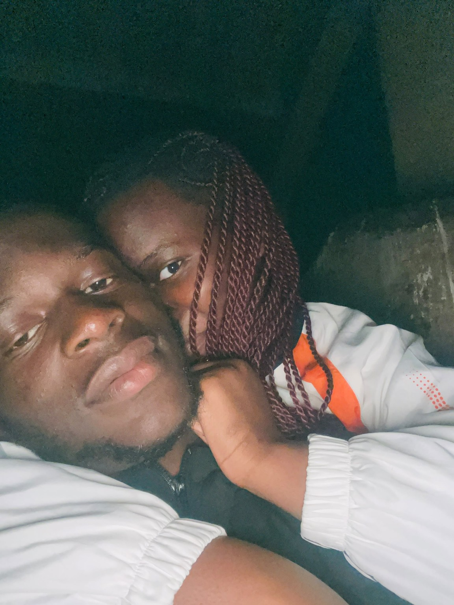
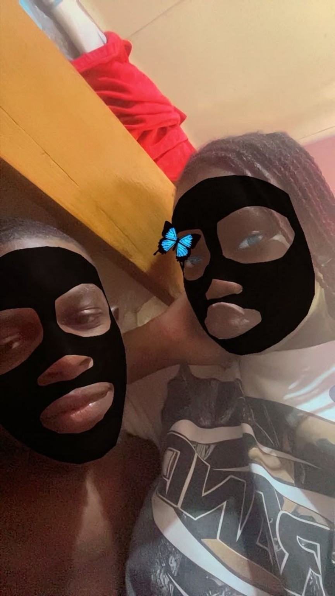
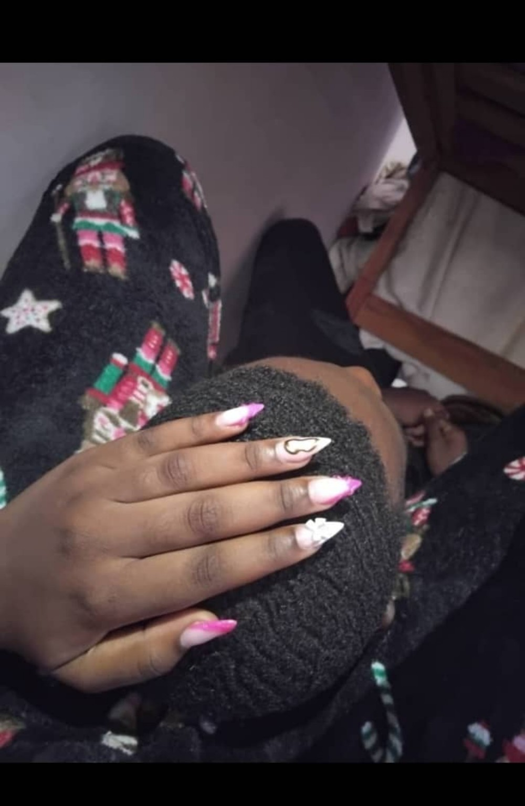
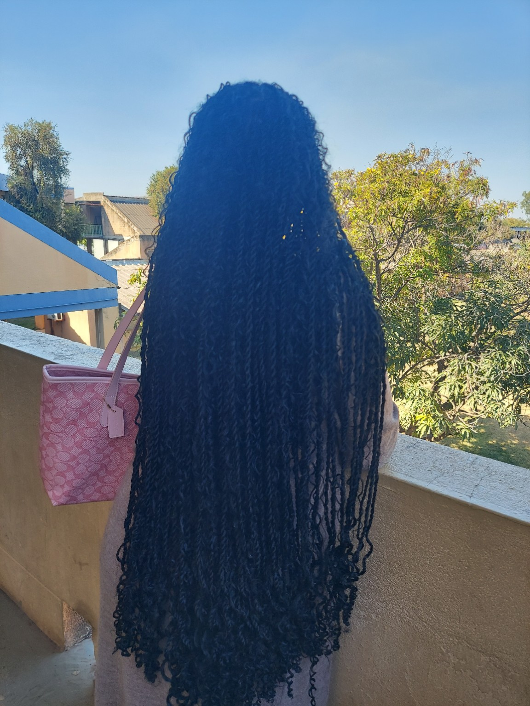
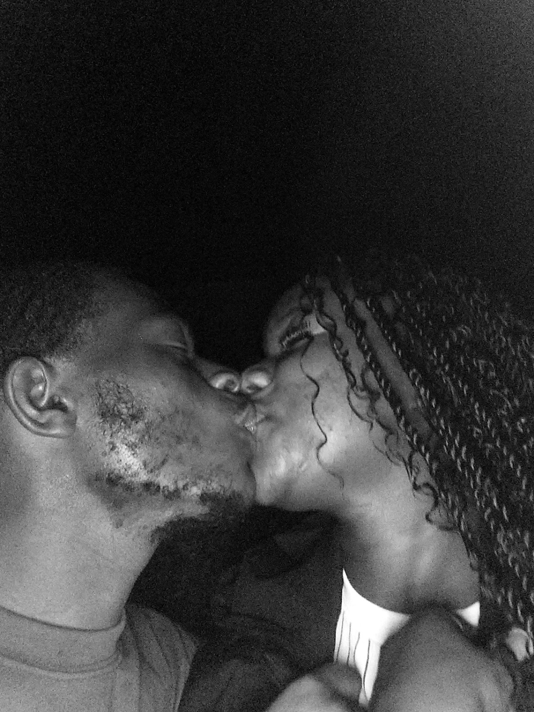

01
Being each other's safe zone.
I love knowing that with you, I can just be Dobby. No pretending. No having to have everything figured out. Just us.
A message from Dobby

For my Mama ❤️
I wanted to make you something instead of just saying the same words again. So, here is a tiny piece of my heart.
— Dobby
01 · Us
It's funny how the simplest things become some of my favorite memories when you're there. A movie. A random conversation. Being completely goofy. Doing absolutely nothing. Somehow, with you, ordinary never feels ordinary.

I love knowing that with you, I can just be Dobby. No pretending. No having to have everything figured out. Just us.

We can be ridiculous and somehow those are the moments I end up loving the most.

Sometimes you don't even need to say anything. Just being close is enough.
02 · Our little things
03 · You & me


04 · From Dobby to Mama
My Mama,
I don't think I say it enough, but I really do appreciate you. More than just the big things, I appreciate all the little things — the way you make me laugh, the way we can be completely ourselves around each other, and the way being with you can make a bad day feel a little less heavy.
We've had our highs and our lows, our serious moments and our absolutely ridiculous ones. We've watched movies together, been each other's safe zones, shared moments that are just ours, and been goofy enough to create memories we'll probably laugh about for years.
You have become someone I don't just love, but someone I feel safe with. And that means more to me than I can properly put into words.
I made this because I wanted you to have something you could open on a random day and be reminded that somewhere out here, there is a Dobby who loves his Mama very, very much.
You are beautiful. You are special. You are important to me. And I hope I never stop giving you reasons to smile.
Whatever chapters come next, I'm grateful that you're part of my story.
Always your Dobby,
❤️
05 · Our story
Two people, one screen, and somehow a thousand little conversations around the movie.
Knowing that we can find comfort in each other is one of the things I value most about us.
The moments where absolutely nothing makes sense and we are somehow having the best time.
This isn't the end of the story. It's just another page.
06 · One last thing
Come back here and let Dobby remind you. ❤️